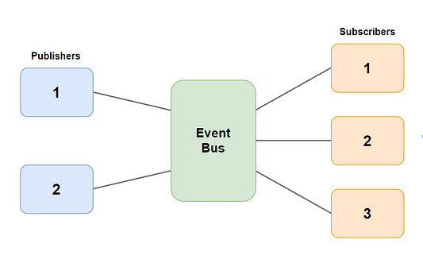

Exploring any subject in depth unveils recurring challenges that can be addressed with common patterns. Take cooking for instance, encountering the need to flavor and thicken a sauce is a familiar scenario. Delving into culinary literature and practices reveals a consistent solution pattern. In Western cooking, sauces often find their thickness through a flour roux and are enriched with the aromatic trio of mirepoix (carrots, onion, and celery), complemented by some form of stock. These culinary strategies mirror the concept of design patterns or best practices in software development. These patterns provide valuable templates that offer a reliable structure for problem-solving. They are not rigidly specific, instead offering a flexible framework that can be applied widely, streamlining the process of finding effective solutions.
When dealing with live applications and data, a simple yet crucial challenge often occurs. How do you update elements that rely on data as the data changes? Within the Publish-Subscribe design pattern, a dynamic trio emerges—the publisher, event bus, and subscriber. The subscriber is interested in the publisher’s state, awaiting notifications of any changes. In this solution, publishers report alterations to a centralized event bus. This singular hub then disseminates the relevant updates to all subscribing entities. The elegance of this design lies in its ability to compartmentalize code efficiently while preserving functionality and scalability.

Publisher-Subscribe Design Pattern
This approach has proven highly effective in my experiences, particularly in the context of Meteor based websites. Leveraging this design pattern, I seamlessly enabled web pages to autonomously showcase real-time updates whenever changes occurred in a MongoDB. The Publish-Subscribe pattern, with its clear structure and communication flow, provides a robust foundation for creating responsive and scalable systems, as exemplified in this application within the Meteor framework.
In conclusion, whether in the realm of culinary arts or software development, recognizing and applying common patterns proves invaluable in addressing recurring challenges. Drawing parallels between these disciplines underscores the universality of pattern-based problem-solving, showcasing the adaptability and efficiency gained through structured approaches.